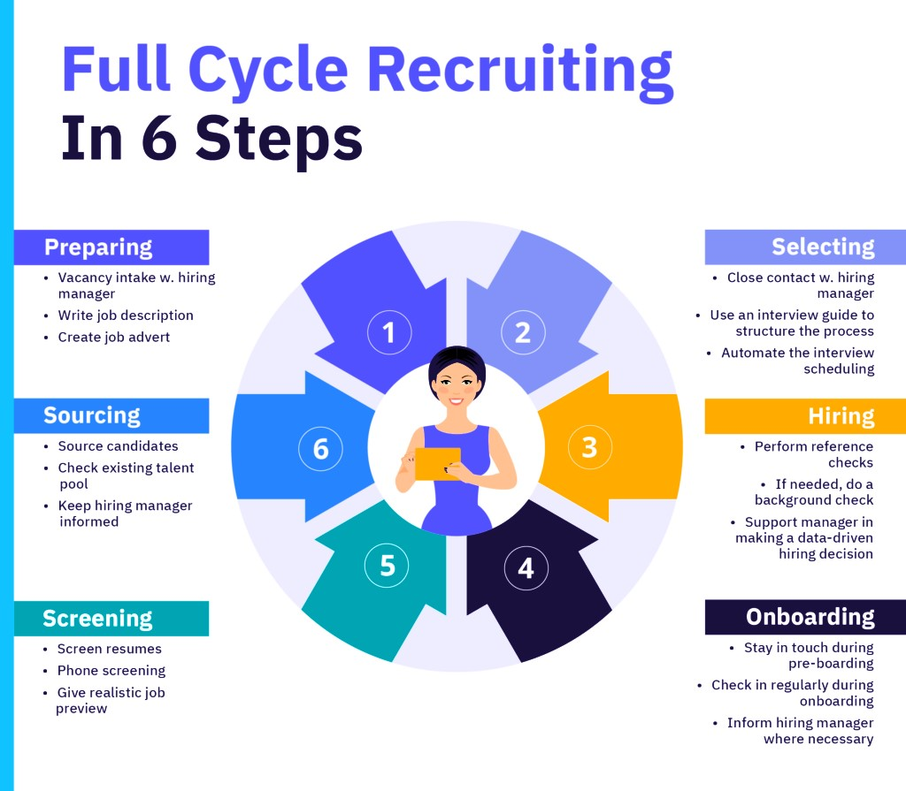

Every successful hire starts with a clear understanding of the role and the organization. As a Full-Cycle Recruiter, my first step is to connect with the hiring team to dive deep into their goals, values, and expectations. This stage is like setting the foundation for a house—it’s where we outline the skills, qualifications, and personality traits the ideal candidate should have. By aligning recruitment efforts with the company’s culture and long-term vision, we ensure that the hiring process brings value to both the business and the employee.
The job description is often the first impression candidates will have of the role, so it has to be engaging and precise. In this step, I craft a description that goes beyond a list of responsibilities and requirements—it’s about telling a story. What makes this company special? Why should someone want to join this team? A compelling job description highlights the perks, growth opportunities, and the company’s mission. It not only attracts top talent but also helps potential candidates picture themselves thriving in the role.
With the role defined and the job description ready, the next step is sourcing candidates. This involves finding talent from a variety of channels, like job boards, professional networks (LinkedIn is a favorite), and even personal referrals. I also reach out to passive candidates—those who aren’t actively job-hunting but could be a great fit. The goal here is to build a diverse talent pool so that the company has options to choose the best match for the role. My approach is focused on quality over quantity, ensuring that every candidate presented aligns with the role's requirements and the company’s culture.
Interviews are where we dig deeper. I coordinate and often conduct interviews to evaluate a candidate’s technical abilities, problem-solving skills, and cultural fit. These conversations aren’t just about grilling candidates—they’re an opportunity for them to showcase their strengths and ask questions about the role. I believe in structured interviews that are fair and consistent, ensuring every candidate gets an equal chance. Interviews are also about leaving candidates with a positive impression, even if they don’t get the job.
Once we’ve identified the ideal candidate, it’s time to do some homework. Reference checks are an important step to confirm the candidate’s skills, work ethic, and reliability. I speak with previous employers or colleagues to gather honest feedback about their performance. Background verification ensures that the information provided about their education and past roles is accurate. This step builds trust and reduces the risk of surprises later on.
Extending a job offer is one of the most rewarding steps in the recruitment process. This is where all the effort pays off! I ensure that the offer is clear, fair, and aligns with the expectations of both the candidate and the employer. Salary, benefits, and any additional perks are discussed openly, and I handle any negotiations with care to create a win-win situation. A well-handled job offer process leaves candidates feeling excited to join the company.
Onboarding is more than just paperwork—it’s about welcoming the new hire into the organization and setting them up for success. I coordinate with the HR team to ensure the new employee has everything they need, from access to tools and resources to introductions with their team. A smooth onboarding process helps new hires feel valued and confident in their role from day one. This stage is crucial for building a strong relationship between the employee and the company.